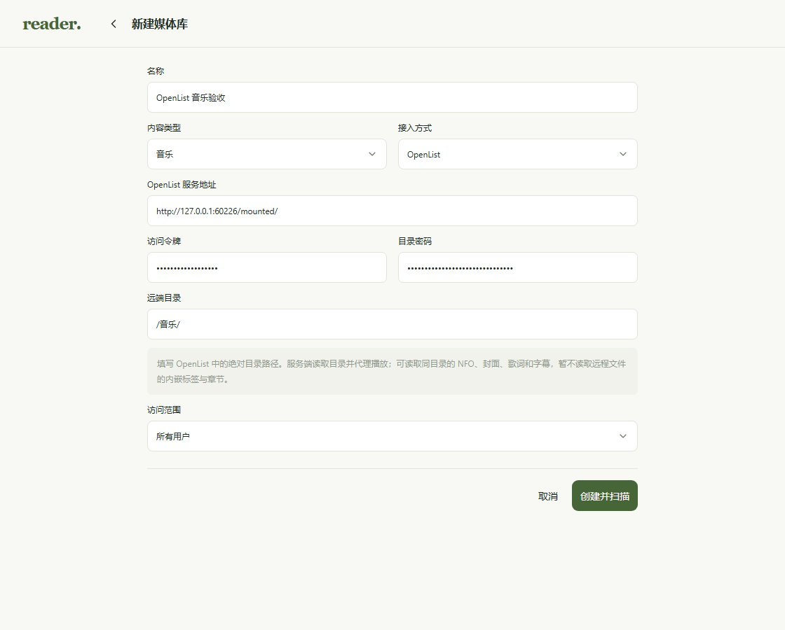
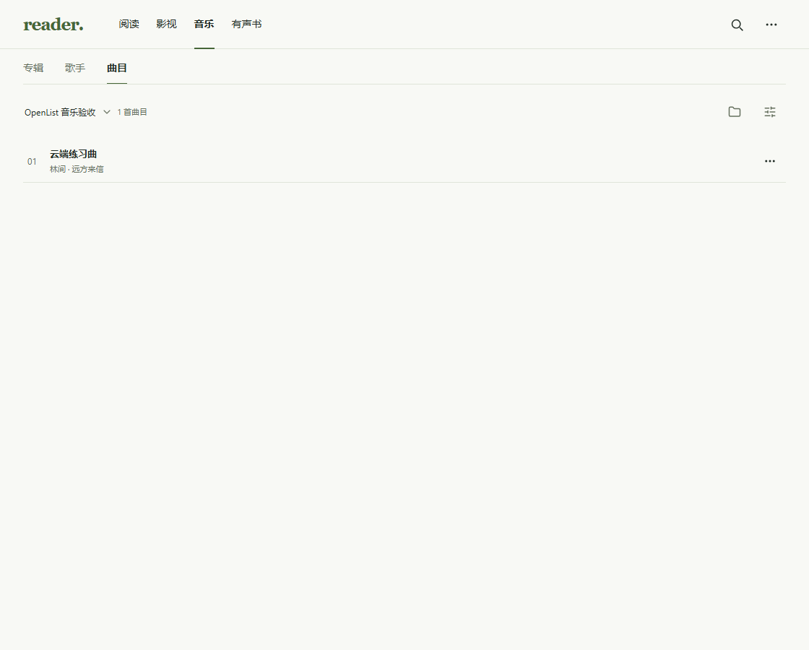
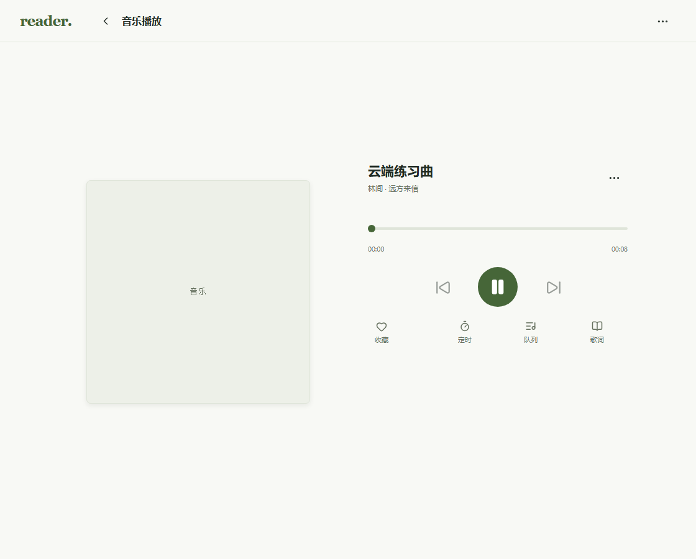
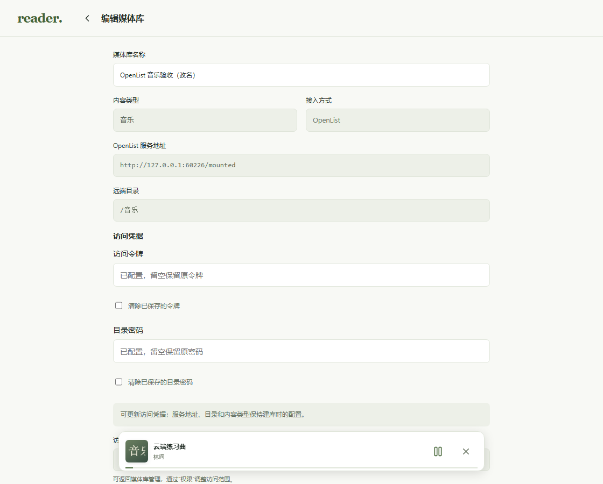

OpenList 创建、扫描与播放验收
生产构建页面、真实 Reader 服务与临时数据库。OpenList 上游为本机模拟服务；音频为程序生成的 8 秒 WAV。未拦截或模拟 Reader 业务 API。
- 生产页面表单向真实 Reader 接口提交 OpenList 连接、音乐类型、访问范围和防重复创建的请求标识。
- 真实扫描任务完成并读取远程 NFO；服务地址和目录按规范保存，配置接口只返回凭据是否已配置，不回显令牌或密码。
- Chromium 通过 Reader 代理成功解码并播放生成的 WAV；指定范围读取精确返回 20 字节、206 状态和正确的 Content-Range。
- 编辑页不回显凭据；改名时保留原令牌与目录密码，单独更新令牌后保留目录密码，后续真实范围读取继续成功。
- OpenList 授权头没有转发给原始媒体下载地址；浏览器没有页面运行错误。
01-create-openlist
02-scanned-track
03-remote-audio-playing
04-redacted-edit